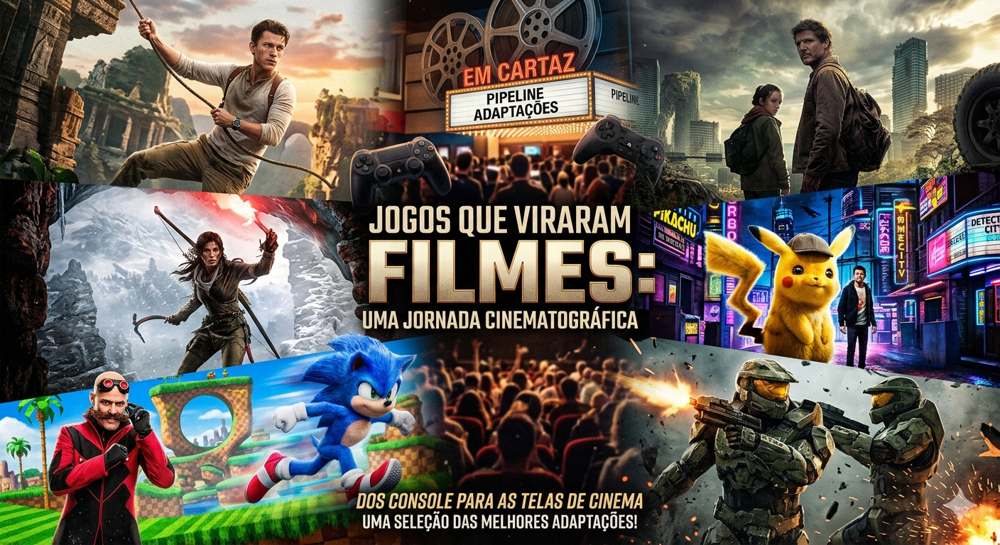

[Jogos que entraram paras telas dos cinemas]

SINOPSE :
Presentes nas melhores lembranças, temos vários jogos nostalgicos que moldaram uma boa parte da nossa infancia tendo influencia em boa parte do mundo. Ver boas lembranças sendo renovadas em formas de filmes nos causa uma grande nostalgia, por meio de; musicas, referencias, personagens...